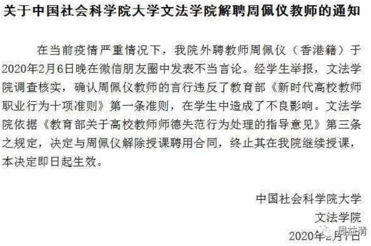

口述实录 | 这对父子是列车长和护士，他们冲上了抗疫前线……
原文链接 备份链接 编者按：这是一对父子。父亲赵华明是铁路上海客运段京沪车队的列车长。17年前非典时期，他跑1461/1462次京沪绿皮车。今年新型冠状病毒疫情之际，他仍出乘，跑临客，去重庆。与17年前不同的是，当年在读小学的儿子赵程，如 …
根据丁香医生实时数据，截至 2020 年 2 月 9 日 18 时，全国累计确诊病例 37286 例，疑似病例 28942 例，新增确诊病例 2692 例，新增疑似病例 3916 例。其中，重症病例 6188 例，死亡病例 813 例，治愈病例 2837 例。
疫情发展
1.气溶胶传播说法不一。2 月 8 日举行的上海市疫情防控工作领导小组新闻发布会，上海市民政局副局长曾群说：“卫生防疫专家告诉我们，目前可以确定的新冠肺炎传播途径主要为直接传播、气溶胶传播和接触传播。”但在 9 日上午，国家卫健委新公布了《关于印发新型冠状病毒肺炎诊疗方案（试行第五版 修正版）》。其中显示，经呼吸道飞沫和接触传播是主要的传播途径。气溶胶和消化道等传播途径“尚待明确”。
2.“假阴性”频出，中央指导组专家建议出院应考虑发病时长。近期多地出现新冠病毒核酸检测“假阴性”情况，即患者本身是新型冠状病毒感染者，但核酸检测报告阴性。新京报记者梳理发现，为了最大程度防控疫情，相比国家卫健委发布的出院标准，多地已提高出院要求，包括加测粪便核酸检测、延长观察时间等。新京报采访了中央指导组专家、北京朝阳医院副院长童朝晖。他认为，出院因考虑发病时间，至少要等发病后两周，复查影像、两次阴性再考虑出院，且出院后也应自我隔离，并进行随访。
3.病毒检测出现“假阴性”，专家建议痊愈者仍隔离 14 天。中山大学附属第三医院大内科、呼吸专科副主任，广东援鄂医疗队专家周宇麒表示：“医务人员对患者的出院管理确实应该谨慎，我们在临床上是按照《新型冠状病毒感染的肺炎诊疗方案》的要求，患者不仅要连续两次呼吸道病原核酸检测阴性，而且临床症状要明显好转，CT要显示确实没有炎症了才可解除隔离出院。这三项条件缺一不可，基本上能保证患者康复了。”同时周宇麒强调，现在医学界对新冠病毒的认识还不够深入，以上出院标准只是基于目前的认识水平，因此为了安全起见，医院通常会让出院患者继续隔离14天，观察体温体感变化；医生对出院患者要进行追踪随访，确保隔离期内病情不出现反复，才算真的痊愈。
4.湖北——湖北首次公布各地市新冠疫情病死率。2 月 9 日，湖北省通报最新的新冠病毒肺炎疫情情况，并首次详细统计了省内各地市的病死率。根据通报，湖北全省累计死亡 780 例，病死率 2.88%。根据病死率从高到低，天门市死亡 10 例，病死率最高，为 5.08%，武汉市 608 例，病死率 4.06%，排在第二位。
5.武汉——武汉精神卫生中心 80 名医患确诊新冠肺炎。据微博账号@中国新闻周刊，武汉市精神卫生中心（武汉市心理医院）出现院内感染。该院为湖北省最大的三甲精神专科医院，据来自该院内部的消息源透露，至少有大约 50 名患者和 30 名医务人员确诊感染了新冠肺炎。据悉，前期医务人员无防护装备，后期防护装备虽有改善，但至今进入污染区的医务人员仍然没有三级防护装备，只能做到二级防护，面罩等物资紧缺。2 月 6 号，该精神卫生中心 ICU 已有一例确诊病人死亡，死者为老年病人。
6.天津——天津宝坻百货大楼又添确诊病例，隔离近万人。2 月 2 日，天津对外发布 5 名确诊病例信息，称均与宝坻百货大楼相关。今晨公布的确诊病例中，也有一人与百货大楼相关。此前，“宝坻百货大楼疫情”中已有 194 名销售人员和 9200 名顾客采取相应隔离措施。今日发布会上，相关负责人介绍，该时段内到过宝坻百货大楼的顾客增加 2500 人，总数达 11700 人。
7.西安——肯德基前台确诊新型冠状肺炎。根据西安市雁塔区新型冠状病毒感染的肺炎疫情防控指挥部办公室通报，在对一名新型冠状病毒感染的肺炎患者进行流行病学调查追踪时发现：该患者于 2020 年 1 月 12 日乘坐 K1131 次从郑州到西安，到西安火车站后于 16:00—17:00 之间乘坐 5 路公交车到达西北水电家属院 5-2-612。1 月 13 日下午，前往东仪路职工活动中心，来回乘坐 204⁄709 路车，电子正街站到电子二路口站，其余时间未外出。1 月 14 日 22:00—23:00 之间乘坐 5 路从子午路站至紫薇城市花园站。1 月 17—25 日在 KFC 朱雀店（小寨银泰城店）前台打工，主要工作为备餐，工作时间为 10:00—22:00，每天 9:00—10:00 乘坐 214⁄709 路（电子正街至子午路站），22:00—23:00 之间乘坐 5 路车（子午路至紫薇花园站）返回家中。目前该乘客被确诊为新型冠状病毒感染的肺炎确诊患者。
未来研判
1.牛津大学流行病学教授谈疫情。据《知识分子》专访流行病学专家、牛津大学终身教授陈铮鸣，“要了解武汉地区真实的感染率，除了采用复杂的数学模型预测外，也可利用现有公开的数据进行推算。据报道，在对一千余名各国撤侨者所作的病毒核酸检测发现，感染率约为 1.5%。同样，从浙江温州春节期间来自武汉地区的人数和感染率水平估算，也可得出大致相似的结果。此外，通过对比武汉与湖北以外地区感染者中的死亡率水平的巨大差异，也可大致推导出武汉地区实际感染人数的低估程度。如按 1.0% - 1.5% 的感染率推算，武汉地区的实际感染人数已接近或超过六位数，远远超过目前报告的人数。这也和近期香港学者发表的一份研究报告中所预测的结果相似。”
2.中南医院临床研究揭示新冠肺炎院内感染高。据武汉大学中南医院 2 月 7 日发表在《美国医学会杂志》（The Journal of the American Medical Association）的论文显示，该院从 1 月 1 日至 1 月 28 日收治的 138 名新冠肺炎确诊患者中，约 41.3%的患者属于院内感染，其中 40人（29%）为医护人员，17 人（12.3%）为因其它原因住院的患者。这或许与新冠肺炎早期临床症状复杂（如腹痛、腹泻、头晕等非典型症状）有关，这意味着非一线的科室同样面临暴露风险。如果早期“警报”拉响及时，医务人员的感染风险可能会不那么严重。
城市防控
1.全国生活物资供应平稳。2 月 9 日，国务院联防联控机制举行新闻发布会。国家发改委经贸司副司长陈达表示，全国以及武汉市等重点地区重要生活物资的供应是有保障的，价格预计总体平稳。陈达介绍，从最新监测的数据来看，2 月 8 日，全国 36 个大中城市米面油零售价格与节前基本持平，猪肉价格小幅上涨后趋稳，鸡蛋价格稳中趋降，15 种蔬菜价格比 1 月 30 日高点回落了 10 个百分点。从后期看，全国以及武汉市等重点地区重要生活物资的供应是有保障的，价格预计总体平稳，我们将持续加强监测，对可能出现的个别地区、个别品种的供需矛盾及时予以解决。
2.武汉——两天内检测完武汉所有疑似患者。2 月 8 日，湖北省委书记、省新冠肺炎疫情防控指挥部指挥长蒋超良称“集中两天时间将全市累积的所有疑似患者检测完毕。”在 2 月 5 日的「肺炎疫情防控指挥部」会议，也称“最晚至 2 月 7 日，完成武汉市所有疑似病例的核酸检测”。目前全国的疑似病例超过 28900 人。
3.武汉——雷神山医院首批收纳30人。2 月 8 日起，雷神山医院投入使用，专收重症和危重症，规划 1500 床，首批收纳 30 人。据「武汉市卫健委」发布的「全市定点医院病床使用情况」，2 月 4 日投入使用的火神山医院目前开放 286 床位，规划 1000 床。截止 2 月 8 日，武汉定点医院 29 家共开放 9312 床位。目前武汉按病患轻重分“三级隔离”，定点医院和临时医院为第一级，方舱医院为第二级，征用的酒店、党校、高校为第三级。
4.武汉——武汉大学中南医院全面接管雷神山医院。据湖北日报消息，9 日下午从武汉大学中南医院获悉，8 日晚开始进驻雷神山医院，全面接管医院。雷神山医院院长由武汉大学中南医院院长王行环兼任。据悉，8 日晚，雷神山医院接收首批转诊病人，均入住该院感染一科十六病区。该病区由武汉市第一医院医疗团队负责。与十六病区平行的十五病区，来自省肿瘤医院的医护人员也已进驻。根据此前计划，雷神山医院由武汉市卫健委组建专班进行管理。为便于管理，改由武汉大学中南医院整体接管。已进驻医疗团队无需撤出，继续在各自病区展开救治工作。
5.武汉——雷神山医院医护缺口巨大。2 月 9 日，湖北武汉。中南医院相关负责人表示，目前医院框架已搭起，将着力解决医护缺口较大的问题。同时将根据临床经验与国家相关指南，保证医院正常运行。
6.武汉——武汉市全城一天消毒两次。为有效降低新冠肺炎的传播风险，武汉市在全市范围内布置了新冠肺炎防控消毒处置工作。从 9 日开始，武汉市全城开展一天两次的集中消毒。根据统一部署，全市每日上午 10 时、下午 4 时左右开展消杀，消杀重点范围是：全市医疗机构、集中隔离点、病家、密切接触者家庭、社区、重点单位（含超市、酒店）、集贸市场、公共厕所、垃圾转运站等。
7.湖北，十堰——发热主动就诊奖励 1000 元。湖北十堰房县发布《发热病人就诊奖励办法公告》（第 7 号）发布公告 3 条：1．凡发热人员主动到县乡定点医院发热门诊就诊的，奖励 1000 元。2．凡乡镇、村、组干部（含工作队、村医）排查发现核实 1 例发热人员的，奖励 500 元。3．凡群众举报发热人员并查实的，每 1 例奖励举报人 500 元。
8.无锡——来自湖北、浙江等7省份人员一律劝返。据无锡发布消息，根据第 7 号《通告》精神，解读如下：来自湖北、浙江、广东、河南、湖南、安徽、江西 7 个省份的人员，一律劝返。
9.河南——河南叫停公共场所实习实训。2 月 7 日，河南省《关于加强新型冠状病毒肺炎疫情防控期间学生实习实训管理工作的通知》发布，要求各地各有关学校要高度重视疫情防控期间学生实习实训的管理工作。对因在校外实习实训而暂时无法撤回的师生，各地各校须将其列为重点关注对象，指定专人负责，防止出现“管理盲区”。在疫情持续期间，涉及车站、机场、码头、商超、酒店、展馆等人员密集、流动性强的公共场所的实习，一律停止。
医疗方案
1.「利巴韦林」用量调整。2 月 8 日，国家卫健委公布《关于印发新型冠状病毒肺炎诊疗方案（试行第五版 修正版）》，「修正版」比 2 月 5 日发布的「试行第五版 」 调整利巴韦林的用量，由“1200 mg/次，8 小时一次”改为“500 mg/次，每日 2 至 3 次静脉输注”。
「利巴韦林」为广谱抗病毒药物，药品说明书适应证「呼吸道合胞病毒（RSV）引起的疾病」。在「丁香园」的分析中，指出「利巴韦林」的使用需注意安全性问题，不良反应主要表现为皮疹等皮肤损害，恶心、呕吐等胃肠道反应，过敏性反应等，以及溶血性贫血。美国 FDA 妊娠药物分级中利巴韦林为最危险的 X 级，孕妇禁止使用。世界卫生组织报告药品不良反应数据库中，有关利巴韦林的不良反应报告共 8600 余例，涉及不良反应 26000 余例次，其中包括胎儿异常。
外围影响
1.邮轮公司拒绝中国护照登船。全球第二大邮轮公司皇家加勒比（Royal Caribbean Cruises Ltd.）宣布不再接受持中国内地、香港和澳门护照的旅客登船，挪威邮轮公司等公布类似规定。几个月没去往中国的乘客仍被拒绝，引起种族歧视争议。
2.农业农村部回应武汉养殖业饲料短缺。2 月 9 日，国务院联防联控机制举行新闻发布会。针对武汉养殖业饲料短缺问题，农业农村部畜牧兽医局副局长孔亮回应说，已协调当地饲料生产企业复产复工，武汉饲料短缺问题正在缓解，将持续关注这一问题。
3.因发出疫情“不当言论”，中国社会科学院大学解聘教师。2 月 6 日晚，中国社会科学院大学文法学院外聘教师周配仪在微信朋友圈发出如下言论。2 月 7 日，中国社会科学院大学文法学院对周配仪发出解聘通知。

舆论关注
1.仙桃民用口罩厂老板谈生产阻力。湖北仙桃口罩工厂老板通过「财新 FM 」谈生产阻力，原本专做外销，现在面临出口受阻，内销被停业的状态。遇到问题包括材料涨价、员工跳槽或害怕传染不上班以及没有医疗器械证明等。「因为外销转内销，国内医疗器械的生产许可证成本很大，就一直没有办，我们又算是无证经营，最近被市场监督局严令要停业……国内口罩定义是医疗器械，但民用属于防护品，本来有民用市场，不需要许可证，但现在必须要证，我们出口的东西都能达到『一次性医用口罩』的标准，但是没有证。很多单位想要我出示检测报告，但不可能每一批找第三方都出示检测报告，这个成本和时间是不允许的」而目前海外客户也质疑疫区情况，考虑从越南购买，未来可能无法再做海外出口。
2.呼吁将急需救治的非传染性武汉患者异地转诊。中国人民大学清史所学者张宏杰通过微博呼吁，将急需救治的非传染性武汉患者异地转诊。“我呼吁新冠患者异地转诊，很多人质疑，担心会威胁本地人的安全。那么，这次武汉的疫情也带来了严重的次生灾害。很多医院被征用做发热门诊，大量的需透析病人，需要做化疗的癌症病人，以及其他慢性病患者无法得到及时医治。这些人不在少数，危在旦夕，上天无路入地无门，坐木盆划过长江，也被劝返。能不能组织力量将他们异地转诊？这些人不会传染吧？对这部分患者不能一封了之，要网开一面给他们一条生路！”
3.关于降低核酸检测假阴性的两点建议。据豆瓣用户@RedRain，“这是我的朋友（美国洛克菲勒大学病毒学副研究员）根据他所收集的信息，基于多年专业经验作出的判断，现在试剂盒依然紧缺，但使用不当会造成浪费和误判，更加延误疫情，所以希望能让更多一线人员和试剂盒生产商看到，哪怕稍稍有所帮助也好。”
其中主要提出措施有：进行核酸检验时同步进行阳性对照，以排除操作失误可能性；与试剂盒开发人员保持沟通。
4.武汉二氧化硫污染严重引发争议。据豆瓣用户@静悄悄，相关空气质量监测网站给出的武汉瞬时二氧化硫污染物最高达到 1342.27 微克每立方米。造成这一情况的原因可能有工业排放、医疗废弃物焚烧、以及尸体焚烧。
5.河南郑州教育部门家属院拒绝租住的医务人员进入小区。据微博用户@白衣山猫，“昨晚上，河南郑州，教育部门家属院，物业竟然让业主投票表决，决定让不让在他们那租住的医务人员回去住，而且还专门提醒：要抱着为本院负责的态度。附图为聊天记录截图！#身边的战疫#投票结果：教研室 46 号院业主一致通过，不准医务人员回去住！”
6.四大 ICU 主任详解病毒。来自财新的最新报道，采访四位在武汉一线抗疫的 ICU 主任，披露医院面临的难点以及具体的医疗救治情况。
7.武汉女生敲击铁腕求助。据微博用户@isle 民宿，“帮帮他们吧！！！视频来是我小姨拍给我的，这是今天他们小区的真实事件，多处求助无果，她的母亲因感染肺炎没有病床收治，她只能在家敲击铁碗对着邻居喊救命！！！邻居也都帮忙报警，打 120 也还是没有床位。谁能体会这种绝望！？？！我们作为同样被隔离的武汉人能做到只有让更多人看到。这样的事情在武汉每天都还在不断的发生。叩谢大家帮忙转发”
8.美国众议院关于冠状病毒肺炎疫情的听证会（一）。据微博用户@红袖添饭ing，“中国正处在与新型冠状病毒进行全面斗争的前线，医护工作者精疲力竭，检测工具和个人防护用品如面罩、护目镜和手套都严重不足，不得不定量供应。在这个许多中国人民饱受疾病、焦虑和不确定性折磨的时刻，美国公共卫生人士和医护专业人员主动向中国伸出援助之手并提供人道主义和技术方面的支持是重要的和及时的。这些支持将鼓舞中国同事的士气，成为医护人员在疫情第一线工作的国际见证者，并有助于为最新抗病毒药物的临床试验提供技术支持。听说美国疾控中心北京办公室近期将组织医疗队，我很受鼓舞。”
9.基层工作难度太大特来征集解决方案。据豆瓣用户@碎骨重生，基层工作面临的困难有：1）如何结局恐慌；2）如何监管返工人员；3）不配合体温检测；4）造谣。
10.希望各级领导慎重考虑一下封小区的决定。据微博用户@虎掰掰，“封小区的弊端。首先是间接增加了人群聚集机会，从而加大人传人的概率……其次，如果因为快递人员传染，疫情在社区爆发，原本居家隔离的人相对好排查，只要追踪快递人员的送货轨迹就好；现在“排查难度增加到指数级……对于社区的老人、孩子还小的单亲妈妈、残疾人、慢性病患者来讲，封闭小区无疑是强迫他们走出家门……最后再加一条，每一次被迫出行都会消耗一个口罩……”
11.基层镇街机关工作人员对官僚主义和形式主义的质疑。据微博用户@梵如尘已打算孤独终老，“全街道在人手急缺的情况下冒着感染风险顶着群众的白眼咬着牙摸排出来一千多个近期在外市活动过的人员，没见到一个区直市直的真的来帮我们走访，都是来照个照片就走，公众号上看起来倒忙得很，真干活的镇街基层干部和社区工作者根本没空拍照片搞些花里胡哨的宣传。
“而且上午一个领导来检查，下午换一个领导来督导。领导一来检查督导镇街就得去侯着，走访都走访不过来还得去伺候这些。并且还有暗访组天天问群众我们有没有去摸排走访……一个社区才五六个工作人员，扔进各个小区一点水花都溅不起来……不信我们的话你们自己干成吗？”
12.粗暴征用学生宿舍引发争议。据微博账号@校园资讯君，“有学生吐槽：学校连个通知都没下直接把学生宿舍楼改造成病房……”
13.上海小汤山上海公共卫生临床中心扩建。据网传文件，上海公共卫生临床中心应急救治临时医疗用房项目已经启动。
文中所有新闻和消息来源可通过下方链接查看：https://docs.google.com/document/d/17GTHEXYbErM0Qs9dsjlNe9UIp2DeBybLt6aWktXyK1g/edit 《新型冠状病毒肺炎每日疫情播报 2.8》，可复制链接后科6学6上网打开
原文链接 备份链接 编者按：这是一对父子。父亲赵华明是铁路上海客运段京沪车队的列车长。17年前非典时期，他跑1461/1462次京沪绿皮车。今年新型冠状病毒疫情之际，他仍出乘，跑临客，去重庆。与17年前不同的是，当年在读小学的儿子赵程，如 …
原文链接 备份链接 记者/ 魏晓涵 梁婷 韩谦 佟晓宇 实习记者/ 陈威敬 胡琪琛 编辑/杨宝璐 宋建华 医护人员严阵以待 摄影/高瞾 2019年12月30日，武汉市卫计委内部文件流出，称“武汉出现不明原因的肺炎”，与华南海鲜批发市场有 …
原文链接 备份链接 【财新网】（记者 丁捷 综合）大批从事重症医学的医护人员奔赴一线。据国家卫健委，截至2月7日，建立了16个省份支援武汉以外地市的一一对口支援关系，以一省份包一市的方式，全力支持湖北省加强病人的救治工作。驰援武汉的医护 …
原文链接 备份链接 蔡婷说：“大家都荒谬到这个程度了。” 2月5日下午，湖北省人民医院拥挤的门诊部，蔡婷排了3个小时的队。这家医院昨天做了1500份新型冠状病毒的核酸检测，43岁的蔡婷和母亲的样本，也在其中。现在，蔡婷全部心思都在这上面， …
原文链接 备份链接 根据丁香医生实时数据，截至 2020 年 2 月 7 日 18 时，全国累计确诊病例 31253 例，疑似病例 26359 例，新增确诊病例 3193 例，新增疑似病例 4833 例。其中，重症病例 4821 例，死亡 …